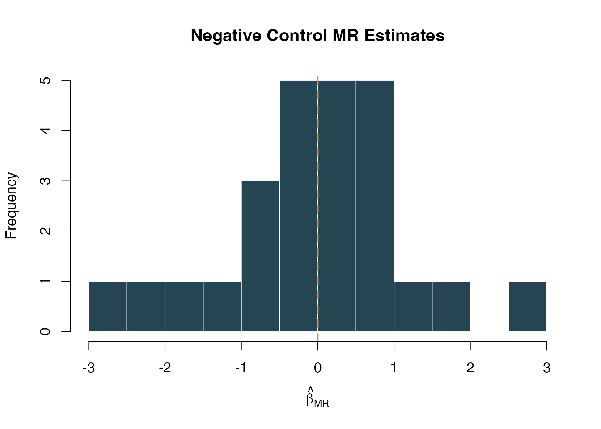

Negative Control Outcomes and Empirical Calibration
NegativeControlCalibration.RmdWhy Negative Controls?
A two-sample Mendelian Randomization study can produce a statistically significant result even when there is no true causal effect. This happens when one of the core MR assumptions is violated — typically the exclusion restriction (instruments affect the outcome only through the exposure) or independence (instruments are not associated with confounders). Standard sensitivity analyses like MR-Egger and weighted median can flag certain patterns of pleiotropy, but they rely on parametric assumptions of their own.
Negative control outcomes provide an empirical, assumption-light check. The idea is simple: pick a set of outcomes that you are confident the exposure does not cause. Run the full MR pipeline on each one. If the analysis is well-behaved, the resulting effect estimates should be centered at zero. If they are not, the pipeline has a systematic problem — residual pleiotropy, population stratification, or some other source of bias — and the primary result should be interpreted with caution.
This is the same logic behind the OHDSI empirical calibration framework used in large-scale observational studies (Schuemie et al., 2014; 2018), adapted here for Mendelian Randomization.
What Makes a Good Negative Control?
A negative control outcome should satisfy two criteria:
No causal effect of the exposure. You must be confident, based on biology and prior evidence, that the exposure cannot plausibly cause the outcome. For example, if you are studying the effect of LDL cholesterol on coronary artery disease, a negative control might be an accidental fracture — there is no biological mechanism linking LDL to fracture risk.
Susceptible to the same biases as the primary analysis. The negative control should be measured in the same population, using the same data pipeline, and subject to the same potential confounders. An outcome that is immune to confounding would not detect confounding-driven bias in your primary analysis.
Practical guidance for selecting negative controls
- Use published lists. The OHDSI community maintains curated negative control outcome lists for common drug-outcome studies. These are a good starting point.
- Aim for 20–100 negative controls. More is better for fitting the systematic error distribution. Fewer than 10 makes calibration unstable.
- Mix prevalences. Include both common and rare outcomes to stress-test the pipeline across different case counts.
- Avoid outcomes on the causal pathway. If LDL lowers cardiovascular risk, then outcomes downstream of cardiovascular disease (e.g., heart failure hospitalization) are not valid negative controls.
- Avoid outcomes caused by the instruments. If a genetic variant in the HMGCR region also affects liver enzymes through a pathway independent of LDL, then liver enzyme elevation is not a valid negative control — it would produce a non-null MR estimate even without bias.
Using Negative Controls in Medusa
Option 1: Database extraction with buildMRCohort()
If your negative control outcomes are defined as cohorts in the OMOP CDM (e.g., from ATLAS), pass their cohort definition IDs when building the MR cohort:
cohortData <- buildMRCohort(
connectionDetails = connectionDetails,
cdmDatabaseSchema = "cdm",
cohortDatabaseSchema = "results",
cohortTable = "cohort",
outcomeCohortId = 100,
instrumentTable = instruments,
negativeControlCohortIds = c(201, 202, 203, 204, 205,
206, 207, 208, 209, 210)
)This adds binary columns nc_outcome_201, nc_outcome_202, etc., to the returned data frame. Each column is 1 if the person had an entry in that cohort, 0 otherwise.
Option 2: Simulated data for testing
For demonstrations and unit tests, Medusa provides a simulation helper that adds synthetic negative control outcome columns to existing cohort data. These outcomes are generated independently of genotype, so the true effect is exactly zero.
simData <- simulateMRData(n = 2000, nSnps = 5, seed = 42)
cohortData <- simulateNegativeControlOutcomes(
simData$data,
nControls = 25,
seed = 123
)
# The original columns are preserved, plus 25 nc_outcome_* columns
ncCols <- grep("^nc_outcome_", names(cohortData), value = TRUE)
cat(length(ncCols), "negative control outcomes added\n")
#> 25 negative control outcomes added
head(ncCols)
#> [1] "nc_outcome_1" "nc_outcome_2" "nc_outcome_3" "nc_outcome_4" "nc_outcome_5"
#> [6] "nc_outcome_6"Running the negative control analysis
runNegativeControlAnalysis() takes the cohort data and instrument table, fits the MR pipeline on each negative control outcome, and returns a summary of the results:
ncResults <- suppressMessages(
runNegativeControlAnalysis(
cohortData = cohortData,
instrumentTable = simData$instrumentTable
)
)
str(ncResults, max.level = 1)
#> List of 4
#> $ ncEstimates :'data.frame': 25 obs. of 8 variables:
#> $ calibration : NULL
#> $ calibratedPrimary: NULL
#> $ biasDetected : logi FALSE
#> - attr(*, "class")= chr "medusaNegativeControls"The returned object has class medusaNegativeControls and contains four elements:
-
ncEstimates: A data frame with one row per negative control outcome, containing the MR effect estimate (beta_MR), standard error (se_MR), and p-value. -
calibration: The fitted systematic error model from theEmpiricalCalibrationpackage (NULL if the package is not installed). -
calibratedPrimary: Calibrated p-value and confidence interval for the primary estimate (NULL if no primary estimate was supplied). -
biasDetected: A logical flag. TRUE if the distribution of negative control estimates is significantly different from zero (one-sample t-test, p < 0.05).
Interpreting the Results
Step 1: Are the negative control estimates centered at zero?
The most basic check. Look at the distribution of beta_MR across negative control outcomes:
estimates <- ncResults$ncEstimates
cat("Number of NC outcomes analyzed:", nrow(estimates), "\n")
#> Number of NC outcomes analyzed: 25
cat("Mean beta_MR:", round(mean(estimates$beta_MR, na.rm = TRUE), 4), "\n")
#> Mean beta_MR: -0.0214
cat("SD of beta_MR:", round(sd(estimates$beta_MR, na.rm = TRUE), 4), "\n")
#> SD of beta_MR: 1.1612
cat("Bias detected:", ncResults$biasDetected, "\n")
#> Bias detected: FALSEIf biasDetected is FALSE, the pipeline is behaving as expected on outcomes with no true effect. If TRUE, there is evidence of systematic bias — proceed with caution when interpreting the primary result.
Step 2: Visualize the null distribution
A histogram of the negative control MR estimates should be roughly centered at zero:
hist(
estimates$beta_MR,
breaks = 15,
main = "Negative Control MR Estimates",
xlab = expression(hat(beta)[MR]),
col = "#264553",
border = "white"
)
abline(v = 0, col = "#E69528", lwd = 2, lty = 2)
Distribution of negative control MR effect estimates. Centered at zero indicates no systematic bias.
Step 3: Examine individual negative control p-values
Under the null, p-values should be uniformly distributed. An excess of small p-values suggests systematic bias:
Step 4: Empirical calibration of the primary estimate
If the EmpiricalCalibration package is installed, Medusa fits a systematic error model to the negative control distribution. This model captures the mean and variance of the systematic error, which can then be used to adjust the primary estimate’s p-value and confidence interval.
To use this feature, pass your primary estimate when running the analysis:
ncResults <- runNegativeControlAnalysis(
cohortData = cohortData,
instrumentTable = instruments,
primaryEstimate = list(
betaMR = 0.30,
seMR = 0.10,
pValue = 0.003
)
)
# The calibrated primary estimate accounts for systematic error
ncResults$calibratedPrimary
# $calibratedP -- p-value after accounting for systematic error
# $calibratedCiLower -- adjusted 95% CI lower bound
# $calibratedCiUpper -- adjusted 95% CI upper boundThe calibrated p-value is typically larger (more conservative) than the nominal p-value because it accounts for the possibility that the observed effect is partially or entirely due to systematic error rather than a true causal effect.
Interpretation guide:
| Scenario | Nominal p | Calibrated p | Interpretation |
|---|---|---|---|
| No bias | 0.003 | 0.005 | Minimal calibration adjustment; result is robust |
| Moderate bias | 0.003 | 0.08 | Systematic error inflates significance; interpret cautiously |
| Severe bias | 0.003 | 0.45 | Result is likely driven by bias, not a true causal effect |
Integration with Diagnostics
Negative controls integrate into the broader Medusa diagnostic framework through runInstrumentDiagnostics(). When nc_outcome_* columns are present in the cohort data, the function automatically runs the negative control analysis and includes the results in its output:
diagnostics <- runInstrumentDiagnostics(
cohortData = cohortData,
covariateData = covariateData,
instrumentTable = instruments
)
# NC results are included in the diagnostics object
diagnostics$negativeControlResults
diagnostics$diagnosticFlags$negativeControlFailureThe diagnosticFlags$negativeControlFailure flag is TRUE when the negative-control analysis detects aggregate systematic bias in the null distribution, rather than when any single control happens to cross a nominal p-value threshold. This flag appears alongside other diagnostic checks (weak instruments, allele frequency discrepancies, genotype missingness) in the Medusa results dashboard.
The Shiny Results Explorer
The interactive results explorer (launchResultsExplorer()) includes a dedicated Negative Controls tab when negative control results are provided. This tab displays:
- Summary cards showing the number of NC outcomes tested, whether bias was detected, and the calibrated primary p-value when available
- Forest plot of NC effect estimates with confidence intervals
- Calibrated primary estimate (if available)
- Table of all per-outcome results for detailed inspection
launchResultsExplorer(
mrEstimate = estimate,
sensitivityResults = sensitivity,
diagnosticResults = diagnostics,
instrumentTable = instruments,
negativeControlResults = ncResults
)Worked Example: Full Pipeline
Putting it all together with simulated data:
# 1. Simulate data
simData <- simulateMRData(n = 3000, nSnps = 5, trueEffect = 0.5, seed = 99)
# 2. Add negative control outcomes (true effect = 0 for all)
cohortData <- simulateNegativeControlOutcomes(
simData$data,
nControls = 20,
seed = 100
)
# 3. Run the negative control analysis
ncResults <- suppressMessages(
runNegativeControlAnalysis(
cohortData = cohortData,
instrumentTable = simData$instrumentTable
)
)
# 4. Summarize
cat("Bias detected:", ncResults$biasDetected, "\n")
#> Bias detected: TRUE
cat("Mean NC beta_MR:", round(mean(ncResults$ncEstimates$beta_MR, na.rm = TRUE), 4), "\n")
#> Mean NC beta_MR: -0.2667
cat("NC outcomes analyzed:", nrow(ncResults$ncEstimates), "\n")
#> NC outcomes analyzed: 20
# 5. Look at the estimates
head(ncResults$ncEstimates[, c("outcome_id", "beta_MR", "se_MR", "pval")], 10)
#> outcome_id beta_MR se_MR pval
#> 1 1 0.69935219 0.7365813 0.34238831
#> 2 2 0.07786702 0.8797965 0.92947473
#> 3 3 0.29727883 0.8412602 0.72380867
#> 4 4 -0.66864199 0.5660976 0.23754611
#> 5 5 -0.55905141 0.8043542 0.48703566
#> 6 6 -0.40108169 0.6052605 0.50754859
#> 7 7 0.57603790 0.5539863 0.29843034
#> 8 8 -0.80865398 0.7057229 0.25185642
#> 9 9 -1.12984972 0.6286428 0.07229055
#> 10 10 -0.30738497 0.5793080 0.59569104Because the simulated negative control outcomes are independent of genotype, the MR estimates should be small and centered near zero, and biasDetected should be FALSE. This confirms that the analysis pipeline is not introducing systematic bias for this dataset.
When Things Go Wrong
If biasDetected is TRUE or many negative controls are significant, consider:
- Population stratification. Are the genetic instruments correlated with ancestry or geography? This can create spurious associations with many outcomes simultaneously.
- Horizontal pleiotropy. If the instruments affect many traits beyond the exposure, negative controls that share biological pathways with those traits may show non-null effects.
- Collider bias. If the cohort is selected on a variable influenced by both the instruments and the outcomes, negative controls can show spurious associations.
- Technical artifacts. Genotype missingness, allele frequency discrepancies, or coding errors can create systematic bias across all outcomes.
In any case, use the calibrated p-value rather than the nominal p-value for the primary analysis, and report both values transparently.
References
- Schuemie MJ, Ryan PB, DuMouchel W, Suchard MA, Madigan D (2014). Interpreting observational studies: why empirical calibration is needed to correct p-values. Statistics in Medicine, 33(2), 209–218.
- Schuemie MJ, Hripcsak G, Ryan PB, Madigan D, Suchard MA (2018). Empirical confidence interval calibration for population-level effect estimation studies in observational healthcare data. PNAS, 115(11), 2571–2577.
- Davies NM, Holmes MV, Davey Smith G (2018). Reading Mendelian randomisation studies: a guide, glossary, and checklist for clinicians. BMJ, 362, k601.
- Sanderson E, Glymour MM, Holmes MV, Kang H, Morrison J, Munafo MR, Palmer T, Schooling CM, Wallace C, Zhao Q, Davey Smith G (2022). Mendelian randomization. Nature Reviews Methods Primers, 2, 6.